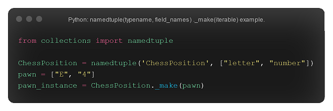
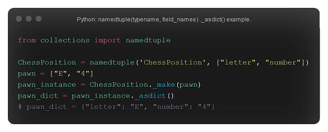
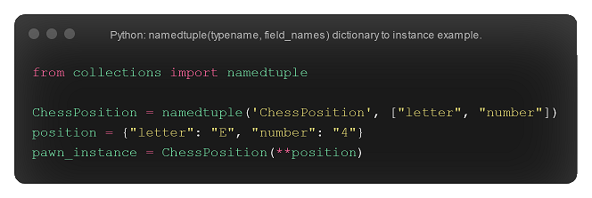
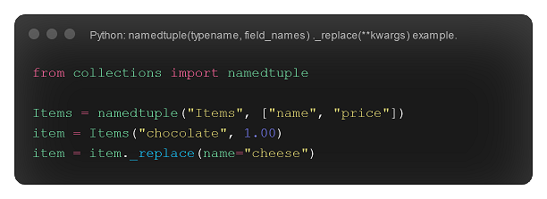
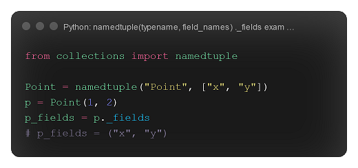
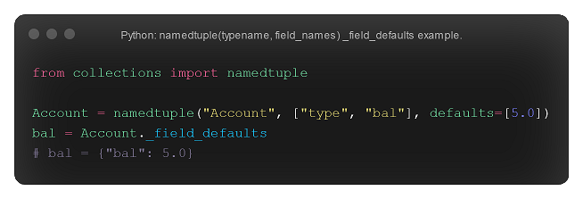
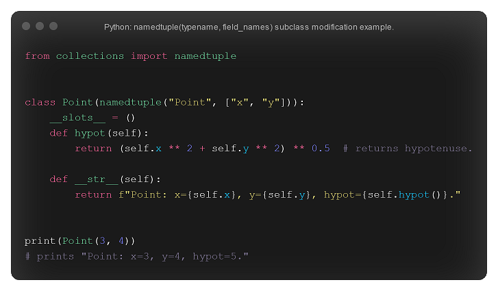

Named tuples
The namedtuple(typename, field_names) returns a tuple subclass named typename, with field names specified in the iterable field_names. For example, namedtuple("Employee", ["name", "age", "email"]) returns a tuple subclass Employee with field names name, age, and email. This tuple subclass can be unpacked like a regular tuple.

Making a namedtuple() instance from an iterable
Lets say you have an iterable pawn = ["E", "4"]. You can create an instance of a namedtuple from this iterable using the ._make(iterable) method. In this example, let's say that your namedtuple is ChessPosition. You would be able to do pawn_instance = ChessPosition._make(pawn); pawn_instance would be an instance of ChessPosition made from the iterable pawn.
Creating a dictionary from a namedtuple() instance
To create a dictionary from a nametuple() instance, you can use the ._asdict() method. This method will return a dictionary that maps field names to their corrosponding values. For example, if you ran pawn_instance._asdict(), it would return {"letter": "E", "number": "4"}.
Converting a dictionary to a namedtuple()
To convert a dictionary to a named tuple, you can use NamedTupleSubClass(**dict). To explain this syntax further, take the previous example. There is a namedtuple subclass ChessPosition. If I have a dictionary position = {"letter": "E", "number": "4"}, then I can convert position to an instance of ChessPosition by doing ChessPosition(**position). Of course, I could also set this to a variable. For example, pawn_instance = ChessPosition(**position). In this case, pawn_instance is identical to the pawn_instance we created before; they both have the same field_names and corrosponding values.
Replacing a field's value
A fields value can be replaced using the ._replace(**kwargs) method. For example, if item is an instance of of Items, where Items = namedtuple("Items", ["name", "price"]) then you could replace the value for name for item via item = item._replace(name="new_value").
Getting a tuple of strings listing field names
To get a tuple of strings listing field names, you can use the ._fields attribute. For example, if there is a namedtuple subclass instance p, then p._fields will be equal to a tuple of strings listing the field names of p.
Field defaults
The ._field_defaults attribute is a dictionary that maps fields to default values. For example, if Account = namedtuple("Account", ["type", "bal"], defaults=[5.0]), then Account._field_defaults = {"bal": 5.0}.
Changing subclass functionality.
As mentioned at the start of this page, namedtuple() creates a subclass named typename. Because of this, we can change the functionality of said subclass as follows. Firstly, we must create a class Typename(namedtuple("Typename", ["field_name"])). Notice that the class name and the type name are the same. Following this, we will set __slots()__ to be an empty tuple. This prevents the creation of instance dictionaries, which will lower memory usage as a result. From there, you are free to introduce as much functionality as you want. Here's an example from the collections docs.
